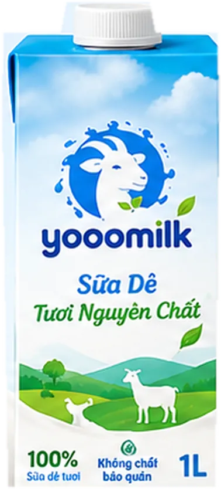

<!DOCTYPE html>
<html lang="vi">
<head>
  <meta charset="UTF-8">
  <meta name="viewport" content="width=device-width, initial-scale=1">

  <title>Câu Chuyện YoooMILK | Thương Hiệu Sữa Dê Tươi</title>

  <meta name="description" content="Khám phá câu chuyện YoooMILK, thương hiệu giới thiệu các sản phẩm sữa dê tươi, sữa dê Organic, sữa hạt và sữa chua với đa dạng lựa chọn mỗi ngày.">

  <meta name="robots" content="index, follow">
  <meta name="theme-color" content="#0879d8">

  <link rel="canonical" href="https://duongthinhuquynhbc-cyber.github.io/yooomilk-website/story.html">

  <meta property="og:type" content="website">
  <meta property="og:site_name" content="YoooMILK">
  <meta property="og:locale" content="vi_VN">
  <meta property="og:title" content="Câu Chuyện YoooMILK | Một Giọt Tươi – Một Ngày Lành">
  <meta property="og:description" content="Tìm hiểu câu chuyện, định hướng và những giá trị thương hiệu YoooMILK theo đuổi.">
  <meta property="og:url" content="https://duongthinhuquynhbc-cyber.github.io/yooomilk-website/story.html">
  <meta property="og:image" content="https://duongthinhuquynhbc-cyber.github.io/yooomilk-website/assets/sua-de-nguyen-chat.png">
  <meta property="og:image:alt" content="Sản phẩm sữa dê tươi YoooMILK">

  <meta name="twitter:card" content="summary_large_image">
  <meta name="twitter:title" content="Câu Chuyện Thương Hiệu YoooMILK">
  <meta name="twitter:description" content="Khám phá hành trình và những giá trị mà YoooMILK hướng đến.">
  <meta name="twitter:image" content="https://duongthinhuquynhbc-cyber.github.io/yooomilk-website/assets/sua-de-nguyen-chat.png">

  <link rel="icon" href="assets/logo-yooomilk.png" type="image/png">

  <link rel="preconnect" href="https://fonts.googleapis.com">
  <link rel="preconnect" href="https://fonts.gstatic.com" crossorigin>

  <link href="https://fonts.googleapis.com/css2?family=DM+Sans:wght@400;500;600;700&family=Playfair+Display:wght@500;600;700&display=swap" rel="stylesheet">

  <link rel="stylesheet" href="css/style.css">
  <link rel="stylesheet" href="css/detail.css">
  <link rel="stylesheet" href="css/story.css">

  <script type="application/ld+json">
  {
    "@context": "https://schema.org",
    "@type": "AboutPage",
    "name": "Câu chuyện thương hiệu YoooMILK",
    "url": "https://duongthinhuquynhbc-cyber.github.io/yooomilk-website/story.html",
    "description": "Tìm hiểu câu chuyện, định hướng và những giá trị thương hiệu YoooMILK theo đuổi.",
    "inLanguage": "vi-VN",
    "isPartOf": {
      "@type": "WebSite",
      "name": "YoooMILK",
      "url": "https://duongthinhuquynhbc-cyber.github.io/yooomilk-website/"
    }
  }
  </script>
</head>
</html>

<body>
<div class="announcement">YoooMILK · Một giọt tươi – Một ngày lành</div>
<header class="site-header">
  <a class="brand" href="index.html"></a>
  <button class="menu-toggle" id="menuToggle" aria-label="Mở menu">☰</button>
  <nav class="main-nav" id="mainNav">
    <a href="index.html">Trang chủ</a><a href="index.html#products">Sản phẩm</a>
    <a class="active" href="story.html">Câu chuyện YoooMILK</a><a href="index.html#contact">Liên hệ</a>
  </nav>
  <div class="header-actions"><a class="cart-trigger" href="index.html#products">Khám phá sản phẩm</a></div>
</header>

<main class="story-page">
  <section class="story-intro">
    <div class="story-intro-visual">
      
      <span class="story-roundel">YOOO<br>MILK</span>
      <span class="story-image-caption">MỘT GIỌT TƯƠI – MỘT NGÀY LÀNH</span>
    </div>
    <div class="story-intro-copy">
      <span class="story-kicker">XIN CHÀO, CHÚNG MÌNH LÀ YOOOMILK</span>
      <h1>Câu chuyện<br><em>thương hiệu</em><br>YoooMILK</h1>
      <p>YoooMILK là thương hiệu giới thiệu và kinh doanh các sản phẩm sữa dê tươi, sữa dê nguyên chất, sữa dê ít đường, sữa dê Organic, sữa hạt hạnh nhân và sữa chua thông qua nền tảng trực tuyến.</p>
      <p>Website được xây dựng nhằm giúp khách hàng dễ dàng tìm kiếm sản phẩm, tham khảo thông tin, dung tích và giá bán. Với danh mục đa dạng, khách hàng có thể tìm hiểu từng dòng sản phẩm và lựa chọn theo sở thích, nhu cầu của bản thân và gia đình.</p>
      <blockquote>“Một giọt tươi – Một ngày lành”</blockquote>
      <a class="story-text-link" href="index.html#products">Khám phá các dòng sản phẩm <span>↗</span></a>
    </div>
  </section>

  <section class="story-manifesto">
    <span class="story-kicker">CHÚNG TÔI MONG RẰNG</span>
    <h2>Để mỗi lựa chọn<br><em>bắt đầu từ sự thấu hiểu</em></h2>
    <p>Chúng tôi tin rằng trải nghiệm lựa chọn sản phẩm sẽ thuận tiện hơn khi khách hàng có thể tiếp cận thông tin rõ ràng, so sánh các dòng sản phẩm và tìm thấy lựa chọn phù hợp với nhu cầu của mình.</p>
  </section>

  
<!-- STORY VALUES -->
<section class="story-values-section" id="story-values">

    <div class="story-section-heading">
        <span class="story-kicker">CHÚNG TÔI HƯỚNG ĐẾN KHÁCH HÀNG</span>

        <h2>
            Những giá trị<br>
            <em>YoooMILK theo đuổi</em>
        </h2>

        <p class="story-values-intro">
            YoooMILK hướng đến việc xây dựng một thương hiệu thực phẩm
            trực tuyến đáng tin cậy, nơi khách hàng có thể dễ dàng tìm
            hiểu, so sánh và lựa chọn những sản phẩm phù hợp với nhu cầu
            sử dụng của bản thân và gia đình. Chúng tôi luôn đặt trải
            nghiệm khách hàng làm trọng tâm trong quá trình phát triển
            thương hiệu.
        </p>
    </div>

    <div class="story-values-grid">

        <!-- VALUE 01 -->
        <article class="story-value-card">
            <span class="story-value-number">01</span>

            <div class="story-value-icon">✳</div>

            <h3>Minh bạch thông tin – Xây dựng niềm tin</h3>

            <p>
                YoooMILK chú trọng cung cấp thông tin sản phẩm rõ ràng,
                đầy đủ và dễ tiếp cận để khách hàng có thể chủ động tìm
                hiểu trước khi đưa ra quyết định mua sắm. Từ hình ảnh,
                tên gọi, quy cách đóng gói, giá bán đến đặc điểm của
                từng dòng sản phẩm đều được trình bày một cách có hệ
                thống. Điều này giúp người tiêu dùng dễ dàng nhận biết
                sự khác biệt giữa các sản phẩm, thuận tiện trong việc
                so sánh và lựa chọn theo nhu cầu thực tế. YoooMILK tin
                rằng sự minh bạch trong thông tin chính là nền tảng
                quan trọng để tạo dựng niềm tin và duy trì mối quan hệ
                lâu dài với khách hàng.
            </p>
        </article>

        <!-- VALUE 02 -->
        <article class="story-value-card">
            <span class="story-value-number">02</span>

            <div class="story-value-icon">◈</div>

            <h3>Đa dạng lựa chọn – Đáp ứng nhiều nhu cầu</h3>

            <p>
                Mỗi khách hàng đều có sở thích, thói quen tiêu dùng và
                nhu cầu sử dụng khác nhau. Vì vậy, YoooMILK phát triển
                danh mục sản phẩm với nhiều lựa chọn như sữa dê tươi,
                sữa dê ít đường, sữa dê Organic, sữa hạt hạnh nhân và
                sữa chua. Mỗi dòng sản phẩm mang đến đặc điểm và trải
                nghiệm thưởng thức riêng, góp phần đáp ứng sự đa dạng
                trong khẩu vị của người tiêu dùng. Thông qua danh mục
                sản phẩm phong phú, khách hàng có thể dễ dàng tìm thấy
                lựa chọn phù hợp cho bản thân và các thành viên trong
                gia đình, đồng thời linh hoạt thay đổi thực đơn sử dụng
                hằng ngày.
            </p>
        </article>

        <!-- VALUE 03 -->
        <article class="story-value-card">
            <span class="story-value-number">03</span>

            <div class="story-value-icon">♡</div>

            <h3>Đồng hành cùng khách hàng – Tận tâm phục vụ</h3>

            <p>
                YoooMILK không chỉ hướng đến việc giới thiệu sản phẩm
                mà còn mong muốn mang lại trải nghiệm mua sắm thuận
                tiện và gần gũi cho người tiêu dùng. Website được xây
                dựng với giao diện trực quan, hỗ trợ khách hàng dễ
                dàng tìm kiếm danh mục, xem thông tin chi tiết và tham
                khảo giá bán của từng sản phẩm. Khi có nhu cầu tìm
                hiểu thêm, khách hàng có thể gửi yêu cầu tư vấn thông
                qua các kênh liên hệ được cung cấp. YoooMILK luôn
                hướng đến việc lắng nghe, giải đáp thắc mắc và hỗ trợ
                khách hàng trong quá trình tìm hiểu, lựa chọn sản phẩm,
                qua đó từng bước xây dựng trải nghiệm mua sắm tích cực.
            </p>
        </article>

    </div>
</section>


  <section class="story-closing">
    <div><span class="story-kicker">KHÁM PHÁ THÊM VỀ YOOOMILK</span><h2>Tìm lựa chọn<br><em>dành cho bạn</em></h2><p>Khám phá danh mục sản phẩm YoooMILK và tham khảo thông tin trước khi đưa ra lựa chọn.</p></div>
    <a class="story-closing-button" href="index.html#products">Xem sản phẩm YoooMILK <span>↗</span></a>
  </section>
</main>
<footer class="footer"><div class="footer-bottom"><span>© <span id="year"></span> YoooMILK. All rights reserved.</span><a href="index.html">Quay lại trang chủ ↗</a></div></footer>
<script>
document.getElementById('year').textContent=new Date().getFullYear();
document.getElementById('menuToggle')?.addEventListener('click',()=>document.getElementById('mainNav').classList.toggle('open'));
</script>
</body></html>
